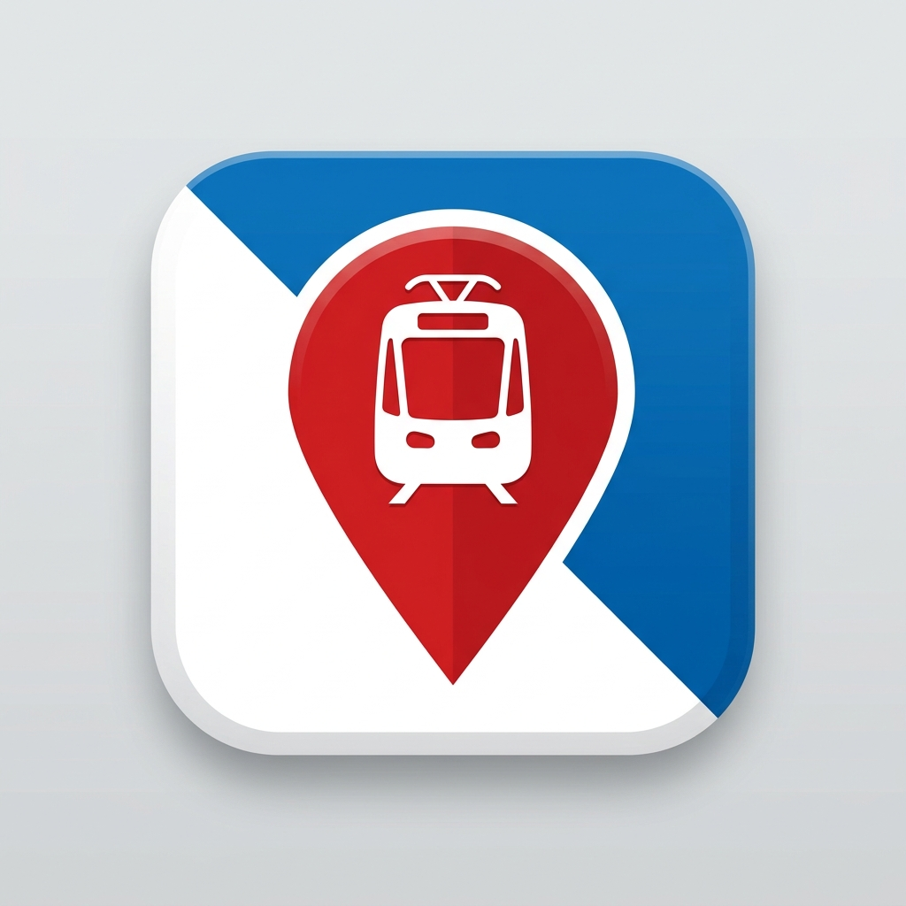

ZüriPort
Transporte Público de Zúrich (SBB / ZVV)
Inicializando GPS...
Buscar estación en Zúrich y alrededores
Buscar
Todos
🚆 Tren
🚋 Tranvía
🚌 Bus
⛴️ Barco / Funicular
📍
Centrar en mi ubicación
Próximas salidas en tiempo real
—
✕